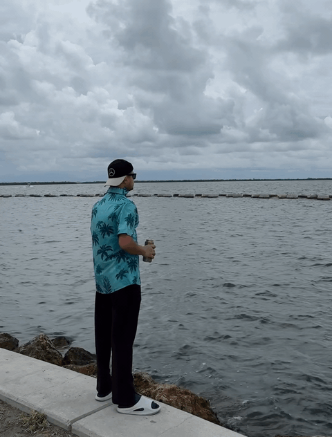

Abdul Mueez
CS PhD Student · University of Central Florida
I’m a Computer Science PhD student at the University of Central Florida working on computer vision for real-world applications. My research focuses on using vision-language models and synthetic data to tackle visual problems in data-scarce industrial settings. Alongside my academic work, I’ve gained hands-on experience deploying solutions at Siemens Energy. I’m particularly interested in building multimodal architectures that perform reliably outside controlled environments.

By the very act of observing, the observer affects the observed reality.
Publications
A Generative Approach for Improving Multi-Label Defect Classification in Photovoltaic Modules
Bridging Foundation Models and ASTM Metallurgical Standards for Automated Grain Size Estimation from Microscopy Images
Vision-Language Models for Analog Gauge Reading: An Empirical Study of Specialization, Transfer and Reliability
SynSpill: Improved Industrial Spill Detection with Synthetic Data
A Cost-Effective Framework to Predict the Ripeness of Any Fruit Based on Color Space
Education
Present
PhD in Computer Science
University of Central Florida
Advisor: Dr. Shruti Vyas
May 2026
MS in Computer Science
University of Central Florida
CGPA: 3.9 / 4.0
Dec 2018
BS in Computer Science & Engineering
BRAC University
CGPA: 3.88 / 4.0
Experience
Aug 2022 — Present
Graduate Research Assistant
University of Central Florida
- Researching adaptation of deep learning and vision-language models for industrial applications
- Developing data-efficient training strategies to improve model robustness on limited data
- Advisor: Dr. Shruti Vyas
Dec 2024 — Sept 2025
Data Science Researcher
Siemens Energy
- Improved production inspection setups by deploying optimized Qwen 2.5 VL models
- Addressed data gaps by designing an SDXL generative pipeline for domain-specific scenes
Aug 2023 — Apr 2024
Graduate Teaching Assistant
University of Central Florida
- Courses: Computer Science I, Database Management Systems
- Assisted in teaching, grading and held office hours for student support
Feb 2022 — Jul 2022
Adjunct Lecturer
Monash Pathways at Universal College Bangladesh
- Courses: Introduction to Computer Systems, Networks and Security, Computing for Engineers
- Coordinated with unit leaders to ensure consistency across course materials
Jun 2019 — Feb 2022
Lecturer
Southeast University
- Courses: Programming Language II (Java), Computer Architecture, Database Design, Digital Logic Design, Computer Fundamentals
- Built a digital course hub to facilitate learning during the pandemic
- Supervised student research projects resulting in two articles published in SEUJCS
Apr 2019 — Jun 2019
Software Engineer
MagnusHub (System Architecture)
- Overhauled system architecture and reduced server overhead with AsyncPG for the OTORide app
- Developed Python protocols for smart locks and smart scooters
- Built AsyncIO TCP server to manage device and API requests
Jan 2019 — Mar 2019
Software Engineering Intern
BRAC IT Services (Mobile Apps R&D)
- Designed and implemented PostgreSQL database models using Django
- Developed RESTful APIs using Django Rest Framework
- Wrote unit tests and participated in integration testing
Jun 2017 — Aug 2018
Undergraduate Teaching Assistant
BRAC University
- Courses: Programming Language I & II, Discrete Mathematics
- Assisted students in labs and graded course assignments
Projects
ClassX
A digital course hub developed during my time as a lecturer, featuring self-produced lecture videos, slides, notes and practice materials, designed to support remote learning during the COVID-19 pandemic.
Explore ClassX